CSS 002一行代码实现5种Css经典布局
简介
页面布局是样式开发的第一步，也是 CSS 最重要的功能之一。
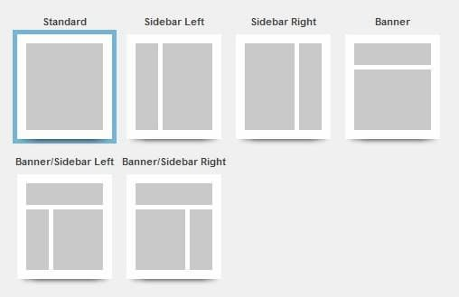
常用的页面布局，其实就那么几个。下面我会介绍5个经典布局，只要掌握了它们，就能应对绝大多数常规页面。
这几个布局都是自适应的，自动适配桌面设备和移动设备。代码实现很简单，核心代码只有一行，有很大的学习价值，内容也很实用。
我会用到 CSS 的 Flex 语法和 Grid 语法，不过只用到一点点，不熟悉的朋友可以先看看教程链接，熟悉一下基本概念。每一个布局都带有 CodePen 示例，也可以到这个网页统一查看。
本文是跟极客大学合作的前端学习讲座的一部分，详见文末说明。
一、空间居中布局
空间居中布局指的是，不管容器的大小，项目总是占据中心点。
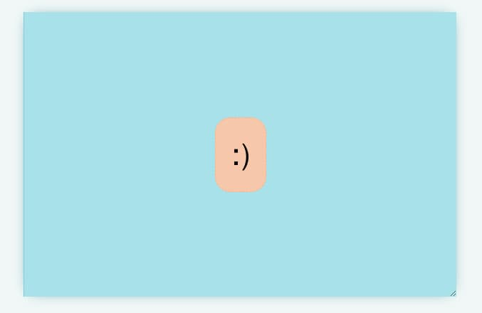
CSS 代码如下（CodePen 示例）。
|
|
上面代码需要写在容器上，指定为 Grid 布局。核心代码是place-items属性那一行，它是一个简写形式。
|
|
同理，左上角布局可以写成下面这样。
|
|
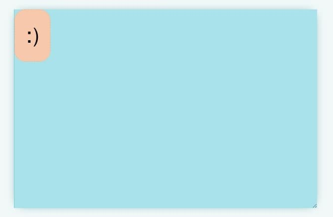
右下角布局。
|
|
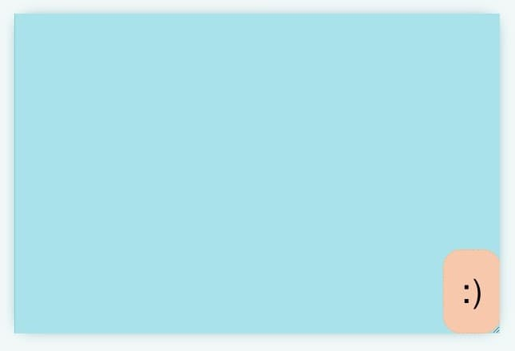
二、并列式布局
并列式布局就是多个项目并列。
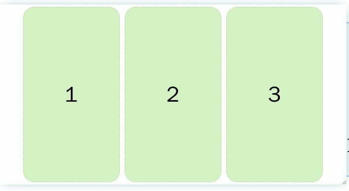
如果宽度不够，放不下的项目就自动折行。
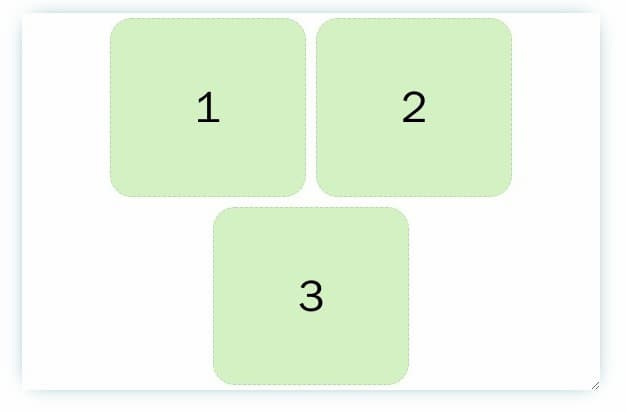
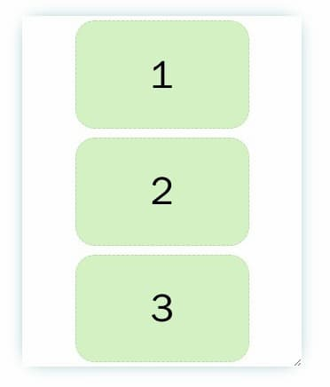
它的实现也很简单。首先，容器设置成 Flex 布局，内容居中（justify-content）可换行（flex-wrap）。
|
|
然后，项目上面只用一行flex属性就够了（CodePen 示例）。
|
|
flex: 0 1 150px;的意思就是，项目的初始宽度是150px，且不可以扩大，但是当容器宽度不足150px时，项目可以缩小。
如果写成flex: 1 1 150px;，就表示项目始终会占满所有宽度。
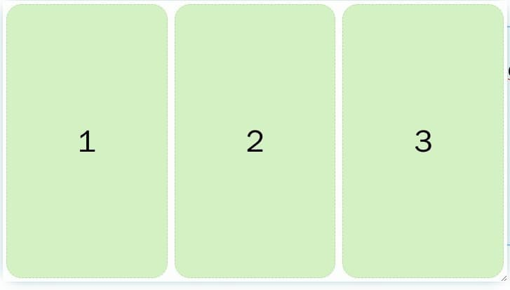
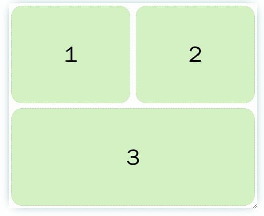
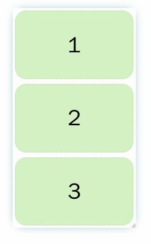
三、两栏式布局
两栏式布局就是一个边栏，一个主栏。
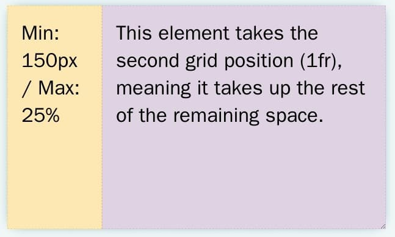
下面的实现是，边栏始终存在，主栏根据设备宽度，变宽或者变窄。如果希望主栏自动换到下一行，可以参考上面的"并列式布局"。
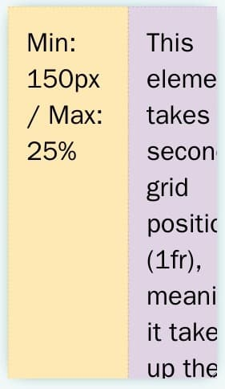
使用 Grid，实现很容易（CodePen 示例）。
|
|
上面代码中，grid-template-columns指定页面分成两列。第一列的宽度是minmax(150px, 25%)，即最小宽度为150px，最大宽度为总宽度的25%；第二列为1fr，即所有剩余宽度。
四、三明治布局
三明治布局指的是，页面在垂直方向上，分成三部分：页眉、内容区、页脚。
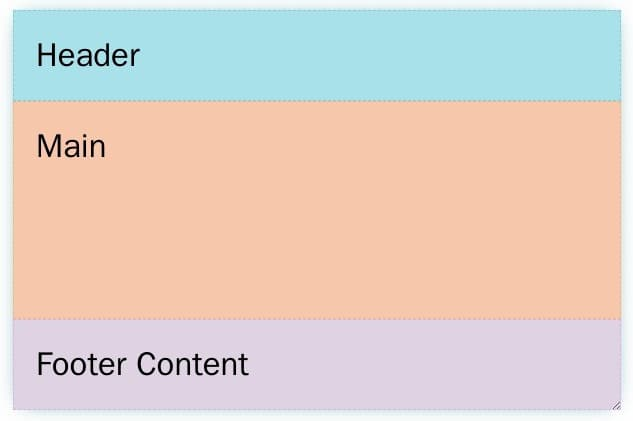
这个布局会根据设备宽度，自动适应，并且不管内容区有多少内容，页脚始终在容器底部（粘性页脚）。也就是说，这个布局总是会占满整个页面高度。
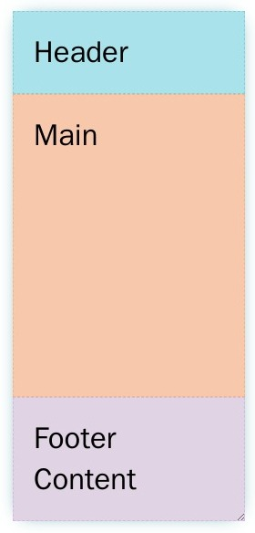
CSS 代码如下（CodePen 示例）。
|
|
上面代码写在容器上面，指定采用 Grid 布局。核心代码是grid-template-rows那一行，指定垂直高度怎么划分，这里是从上到下分成三部分。第一部分（页眉）和第三部分（页脚）的高度都为auto，即本来的内容高度；第二部分（内容区）的高度为1fr，即剩余的所有高度，这可以保证页脚始终在容器的底部。
五、圣杯布局
圣杯布局是最常用的布局，所以被比喻为圣杯。它将页面分成五个部分，除了页眉和页脚，内容区分成左边栏、主栏、右边栏。
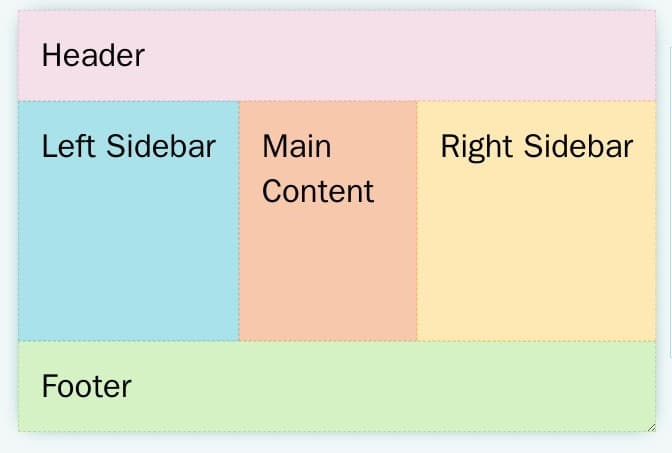
这里的实现是，不管页面宽度，内容区始终分成三栏。如果宽度太窄，主栏和右边栏会看不到。如果想将这三栏改成小屏幕自动堆叠，可以参考并列式布局。
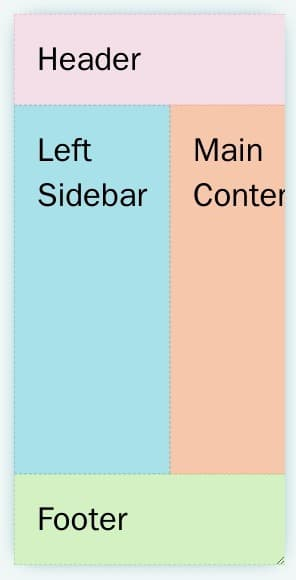
HTML 代码如下。
|
|
CSS 代码如下（CodePen 示例）。
|
|
上面代码要写在容器上面，指定采用 Grid 布局。核心代码是grid-template属性那一行，它是两个属性grid-template-rows（垂直方向）和grid-template-columns（水平方向）的简写形式。
|
|
grid-template-rows和grid-template-columns都是auto 1fr auto，就表示页面在垂直方向和水平方向上，都分成三个部分。第一部分（页眉和左边栏）和第三部分（页脚和右边栏）都是本来的内容高度（或宽度），第二部分（内容区和主栏）占满剩余的高度（或宽度）。
六、参考链接
LearnCSS Ten modern layouts in one line of CSS, Una Kravets